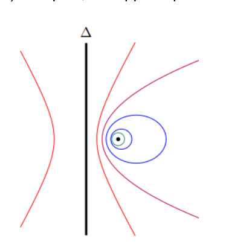
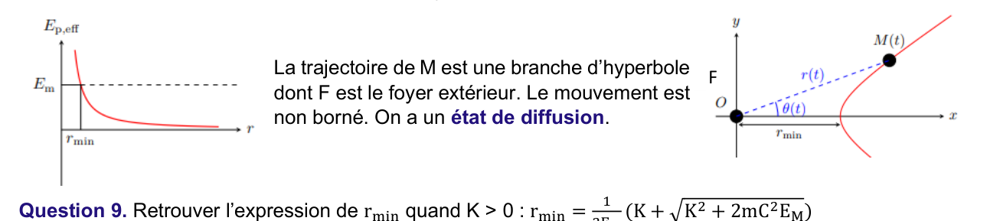
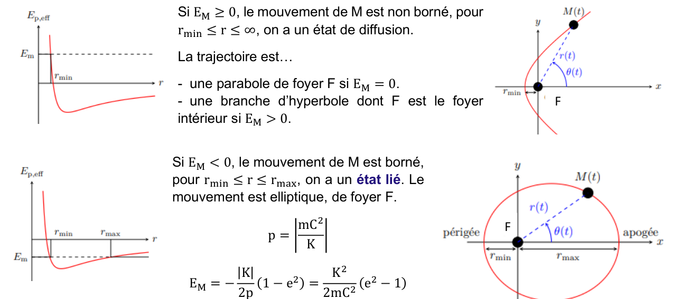

Ch8 — Mouvement à force centrale : lois de conservation, énergie potentielle effective, coniques, satellites
Une force centrale est dirigée vers un point fixe \(O\) : elle n'exerce aucun moment en \(O\). Le moment cinétique se conserve, donc le mouvement est plan et obéit à la loi des aires. Si la force est en plus conservative et en \(1/r^2\) (gravitation, Coulomb), la trajectoire est une conique. Ce chapitre couvre ces résultats, puis leur application aux planètes et aux satellites (géostationnaire, vitesses cosmiques, transfert de Hohmann). AM2 · P2030 · Semestre 3 — D. Courtois, cours daté du 10/11/2026.
1. Résumé de cours
1.1 Force centrale et conservation du moment cinétique
Une force centrale de centre \(O\), appliquée en \(M\), est dirigée selon \(\overrightarrow{OM}\) : \(\vec F=F(r)\,\vec e_r\). Son moment en \(O\) est nul :
\[ \vec{\mathcal M}_O(\vec F)=\overrightarrow{OM}\wedge\vec F=r\vec e_r\wedge F\vec e_r=\vec 0 \]- Le mouvement est plan : il est contenu dans le plan passant par \(O\) et orthogonal à \(\vec L_O\).
- Loi des aires : le rayon vecteur balaie des aires égales pendant des durées égales. Avec \(C=r^2\dot\theta\) (constante des aires) : \(\mathcal A=\tfrac12\,C\,\Delta t\).
1.2 Force centrale conservative et énergie potentielle effective
Une force centrale conservative dérive de \(E_P(r)\) : \(\vec F=-\dfrac{dE_P}{dr}\,\vec e_r\). Elle est attractive si \(F(r)<0\) et répulsive si \(F(r)>0\).
En coordonnées polaires, \(v^2=\dot r^2+r^2\dot\theta^2\) et \(\dot\theta=C/r^2\), donc :
\[ E_M=\tfrac12 m\dot r^2+\underbrace{\frac{mC^2}{2r^2}+E_P(r)}_{E_{Peff}(r)} \]Les seules valeurs accessibles de \(r\) vérifient \(E_{Peff}(r)\le E_M\). La courbe \(E_{Peff}(r)\) donne donc les limites du mouvement radial.
1.3 Champ newtonien : \(F=K/r^2\)
Avec \(E_P(\infty)=0\) : \(E_P=\dfrac Kr\) et \(E_{Peff}=\dfrac{mC^2}{2r^2}+\dfrac Kr\).
- Gravitation : \(K=-Gm_Om_M<0\) (attractive).
- Électrostatique : \(K=\dfrac{q_Oq_M}{4\pi\varepsilon_0}\), \(K<0\) si les charges sont de signes opposés, \(K>0\) sinon.
1.4 Coniques
Une conique de foyer \(F\), de directrice \(\Delta\) et d'excentricité \(e\) est l'ensemble des points tels que \(MF=e\,d(M,\Delta)\). Son équation polaire (origine en \(F\)) est :
\[ r=\frac{p}{1-e\cos\theta} \]| Conique | Excentricité | Domaine de \(r\) |
|---|---|---|
| Cercle | \(e=0\) | \(r=p\) |
| Ellipse | \(0<e<1\) | \(\left[\dfrac p{1+e}\,;\,\dfrac p{1-e}\right]\) |
| Parabole | \(e=1\) | \(\left[\dfrac p2\,;\,+\infty\right[\) |
| Hyperbole | \(e>1\) | \(\left[\dfrac p{1+e}\,;\,+\infty\right[\) (une branche) |

1.5 Trajectoires selon \(E_M\) (champ newtonien)
- \(K>0\) (répulsif) : \(E_M>0\), mouvement non borné, branche d'hyperbole dont \(F\) est le foyer extérieur, état de diffusion.
- \(K<0\), \(E_M>0\) : branche d'hyperbole dont \(F\) est le foyer intérieur (diffusion).
- \(K<0\), \(E_M=0\) : parabole de foyer \(F\) (diffusion, limite).
- \(K<0\), \(E_M<0\) : ellipse de foyer \(F\), état lié, avec \(p=\left|\dfrac{mC^2}K\right|\) et \(E_M=-\dfrac{|K|}{2p}(1-e^2)\).


2. Questions du cours corrigées (Q1 à Q21)
Ce chapitre n'a pas de TD fourni : chaque question du cours est reprise ci-dessous. Les calculs numériques ont été recalculés en Python, avec les constantes du cours (\(G=6{,}67\cdot10^{-11}\), \(R_T=6378\) km, \(m_T=5{,}976\cdot10^{24}\) kg).
a) Coordonnées cylindriques en fonction des sphériques
Étape 1 : lecture du formulaire
Les coordonnées sphériques du formulaire sont \(x=r\sin\theta\cos\varphi\), \(y=r\sin\theta\sin\varphi\), \(z=r\cos\theta\). \(\theta\) est l'angle avec l'axe \(Oz\).
Étape 2 : cylindriques
En cylindriques, \(\rho\) est la distance à \(Oz\) ; \(\rho=\sqrt{x^2+y^2}\). Avec \(x,y\) ci-dessus :
\[ \rho=r\sin\theta \qquad \varphi_{cyl}=\varphi \qquad z=r\cos\theta \]b) Coordonnées sphériques en fonction des cartésiennes
Étape 1 : rayon
\[ r=\sqrt{x^2+y^2+z^2} \]Étape 2 : angle polaire
\[ \cos\theta=\frac zr \qquad\text{soit}\qquad \theta=\arccos\frac zr \]Étape 3 : azimut
\[ \varphi=\arctan\frac yx \quad\text{(en pratique } \operatorname{atan2}(y,x)\text{, pour avoir le bon quadrant)} \]Réponse
\(\vec L_O=\overrightarrow{OM}\wedge m\vec v=\vec 0\) : les vecteurs \(\overrightarrow{OM}\) et \(\vec v\) sont colinéaires à chaque instant. Le point reste donc sur une droite passant par \(O\) : le mouvement est rectiligne radial, avec \(\dot\theta=0\).
Démonstration
Étape 1 : aire élémentaire
En un temps \(dt\), le rayon vecteur tourne de \(d\theta\) : le triangle balayé a pour aire \(d\mathcal A=\tfrac12 r\cdot r\,d\theta\).
\[ d\mathcal A=\tfrac12 r^2\,d\theta \]Étape 2 : intégration
En divisant par \(dt\) : \(\dfrac{d\mathcal A}{dt}=\tfrac12 r^2\dot\theta=\tfrac12 C\). Donc \(\mathcal A=\tfrac12 C\,\Delta t\).
Étape 3 : lien avec \(L_O\)
Trois exemples et leur énergie potentielle
- Gravitation (newtonienne) : \(\vec F=-\dfrac{Gm_Om_M}{r^2}\vec e_r\), \(E_P=-\dfrac{Gm_Om_M}{r}\). Ici \(F(r)=K/r^2\) avec \(K=-Gm_Om_M\).
- Électrostatique (newtonienne) : \(\vec F=\dfrac{q_Oq_M}{4\pi\varepsilon_0r^2}\vec e_r\), \(E_P=\dfrac{q_Oq_M}{4\pi\varepsilon_0r}\).
- Rappel élastique (non newtonienne) : \(\vec F=-k\,r\,\vec e_r\), \(E_P=\tfrac12kr^2\). Elle est centrale et conservative, mais \(F\) n'est pas en \(1/r^2\).
Démonstration
Étape 1 : théorème de l'énergie cinétique
\[ dE_C=\delta W=\sum\vec F\cdot d\vec{OM} \]Étape 2 : force conservative
Pour une force conservative, \(\delta W=-dE_P\). Donc \(dE_C=-dE_P\), soit \(d(E_C+E_P)=0\).
Identification
- Les courbes en bleu, fermées et emboîtées autour de \(F\) : des cercles et ellipses (\(e<1\)).
- La courbe au centre, qui s'ouvre d'un seul côté : la parabole (\(e=1\)).
- Les courbes en rouge, ouvertes, à deux branches : des hyperboles (\(e>1\)).
Le critère est la valeur de \(e\) : plus \(e\) est proche de 0, plus la conique est proche d'un cercle.
Positions et relations
Étape 1 : placement
\(O\) est le centre de l'ellipse, \(F\) est le foyer, à la distance \(c=OF\). Le périgée (point le plus proche de \(F\)) et l'apogée (le plus loin) sont sur le grand axe.
Étape 2 : distances au foyer
Le périgée est à \(a-c\) du foyer, l'apogée à \(a+c\). Avec \(p=b^2/a\), \(e=c/a\) :
\[ r_{min}=\frac p{1+e}=\frac{b^2}{a+c}=a-c \qquad r_{max}=\frac p{1-e}=\frac{b^2}{a-c}=a+c \]Étape 3 : inversion
\[ a=\frac{r_{min}+r_{max}}2 \qquad c=\frac{r_{max}-r_{min}}2 \qquad e=\frac ca \]Justification
Étape 1 : limites
- En \(r\to0\), le terme \(\dfrac{mC^2}{2r^2}\) domine : \(E_{Peff}\to+\infty\).
- En \(r\to\infty\), \(E_{Peff}\to0\).
Étape 2 : cas \(K>0\)
Les deux termes sont positifs : \(E_{Peff}\) décroît de \(+\infty\) vers 0 sans minimum. Donc \(E_M\ge E_{Peff}(r)>0\) pour \(r\ge r_{min}\), mouvement non borné.
Étape 3 : cas \(K<0\)
Le terme \(K/r\) est négatif et tend vers 0 : \(E_{Peff}\) passe par un minimum négatif, puis remonte vers 0 par valeurs négatives. Selon la valeur de \(E_M\), on obtient un état lié (deux points de rebroussement \(r_{min}\), \(r_{max}\)) ou un état de diffusion.
Démonstration
Étape 1 : point de rebroussement
En \(r_{min}\), \(\dot r=0\), donc \(E_M=E_{Peff}(r_{min})\) :
\[ E_M=\frac{mC^2}{2r_{min}^2}+\frac K{r_{min}} \]Étape 2 : équation du second degré
En multipliant par \(r_{min}^2\) : \(E_M\,r_{min}^2-K\,r_{min}-\dfrac{mC^2}2=0\). Le discriminant est \(\Delta=K^2+2mC^2E_M\).
Étape 3 : racine positive
\[ r_{min}=\frac{K+\sqrt{K^2+2mC^2E_M}}{2E_M} \]Démonstration
Étape 1 : même équation
Les deux points de rebroussement vérifient \(E_M\,r^2-K\,r-\dfrac{mC^2}2=0\). Avec \(K=-|K|\) et \(E_M=-|E_M|\), on pose \(D=K^2+2mC^2E_M\), qui est positif pour un état lié.
Étape 2 : deux racines
\[ r_{min}=\frac{|K|-\sqrt D}{2|E_M|} \qquad r_{max}=\frac{|K|+\sqrt D}{2|E_M|} \]Étape 3 : vérification de la forme elliptique
On trouve \(a=\dfrac{r_{min}+r_{max}}2=\dfrac{|K|}{2|E_M|}\), \(c=\dfrac{r_{max}-r_{min}}2=\dfrac{\sqrt D}{2|E_M|}\), donc \(e=\dfrac{c}{a}=\dfrac{\sqrt D}{|K|}=\sqrt{1+\dfrac{2mC^2E_M}{K^2}}\). Et \(p=\dfrac{mC^2}{|K|}\), ce qui redonne \(E_M=-\dfrac{|K|}{2p}(1-e^2)\).
Condition
Étape 1 : \(r_{min}=r_{max}\)
Cela impose \(\sqrt D=0\), soit \(e=0\).
Étape 2 : énergie et rayon
\[ E_M=-\frac{K^2}{2mC^2} \qquad R=p=\frac{mC^2}{|K|} \]Étape 3 : vitesse
Pour un cercle, \(v=C/R\), donc \(C^2=|K|R/m\) : un mouvement circulaire est possible à chaque rayon, avec une énergie \(E_M\) correspondante.
Réponse
Les planètes décrivent des ellipses dont le Soleil est un foyer, avec un mouvement borné. C'est l'état lié : \(E_M<0\).
Données : \(r_{périhélie}=147{,}1\cdot10^6\) km, \(r_{aphélie}=152{,}1\cdot10^6\) km
Étape 1 : demi-grand axe
\[ a=\frac{147{,}1+152{,}1}{2}\cdot10^6=1{,}496\cdot10^8\ \text{km} \]Étape 2 : demi-distance focale et excentricité
\[ c=\frac{152{,}1-147{,}1}{2}\cdot10^6=2{,}5\cdot10^6\ \text{km} \qquad e=\frac ca=\frac{2{,}5}{149{,}6}\approx1{,}671\cdot10^{-2} \]Étape 3 : demi-petit axe et paramètre
\[ b=a\sqrt{1-e^2}\approx1{,}496\cdot10^8\ \text{km}\ \ (\approx149{,}58\cdot10^6\ \text{km}) \qquad p=\frac{b^2}{a}\approx1{,}496\cdot10^8\ \text{km} \]Démonstration
Étape 1 : PFD sur un cercle
La seule force est la gravitation, centripète. Avec \(a=v^2/R\) :
\[ \frac{Gm_Sm_P}{R^2}=m_P\frac{v^2}{R} \quad\Longrightarrow\quad v=\sqrt{\frac{Gm_S}{R}} \]Étape 2 : période
La vitesse est constante (mouvement uniforme). \(T=\dfrac{2\pi R}{v}\), donc \(T^2=\dfrac{4\pi^2R^2}{v^2}=\dfrac{4\pi^2R^3}{Gm_S}\).
Démonstration
\[ E_M=\tfrac12m_Pv^2-\frac{Gm_Sm_P}{R}=\frac{Gm_Sm_P}{2R}-\frac{Gm_Sm_P}{R}=-\frac{Gm_Sm_P}{2R} \]Données : \(T=86\,164\) s, \(G=6{,}67\cdot10^{-11}\), \(m_T=5{,}976\cdot10^{24}\) kg, \(R_T=6378\) km
Étape 1 : rayon de l'orbite (troisième loi, \(Gm_T\))
\[ R^3=\frac{Gm_TT^2}{4\pi^2}\quad\Longrightarrow\quad R\approx4{,}216\cdot10^{7}\ \text{m}\approx42\,164\ \text{km} \]Étape 2 : altitude
\[ h=R-R_T=42\,164-6\,378\approx35\,786\ \text{km} \]Étape 3 : vitesse
\[ v=\frac{2\pi R}{T}=\sqrt{\frac{Gm_T}{R}}\approx3{,}07\ \text{km·s}^{-1} \]Valeurs (\(v=\sqrt{Gm_T/r}\), \(r\) = distance au centre de la Terre)
- Orbite basse \(h=200\) km : \(r=6578\) km, \(v\approx7{,}78\) km/s.
- Première vitesse cosmique \(h=0\) : \(v_1=\sqrt{Gm_T/R_T}\approx7{,}91\) km/s.
- Géostationnaire : \(v\approx3{,}07\) km/s.
- Lune \(d_{TL}=384\,400\) km : \(v\approx1{,}02\) km/s.
Réponse
Étape 1 : seuil
L'état de diffusion correspond à \(E_M\ge0\). La valeur minimale est donc \(E_M=0\).
Étape 2 : vitesse de libération
\[ \tfrac12mv_{lib}^2-\frac{Gm_Tm}{R_T}=0 \quad\Longrightarrow\quad v_{lib}=\sqrt{\frac{2Gm_T}{R_T}}=\sqrt2\,v_1\approx11{,}18\ \text{km·s}^{-1} \]Données : \(r_A=R_T+200\) km \(=6578\) km (périgée), \(r_B=R_T+35\,786\) km \(=42\,164\) km (apogée)
Étape 1 : demi-grand axe
\[ a=\frac{r_A+r_B}2=\frac{6578+42164}2\approx24\,371\ \text{km} \]Étape 2 : excentricité
\[ e=\frac{r_B-r_A}{r_B+r_A}=\frac{35586}{48742}\approx0{,}730 \]Étape 3 : demi-petit axe
\[ b=a\sqrt{1-e^2}\approx24\,371\times0{,}683\approx16\,654\ \text{km} \]Réponse
Étape 1 : période de l'ellipse (troisième loi de Kepler)
\[ T_{ell}=2\pi\sqrt{\frac{a^3}{Gm_T}}\approx3{,}786\cdot10^{4}\ \text{s} \]Étape 2 : demi-période (du périgée à l'apogée)
\[ \Delta t=\frac{T_{ell}}2\approx1{,}893\cdot10^{4}\ \text{s}\approx5\ \text{h}\ 16\ \text{min} \]Vitesses sur le cercle (\(v=\sqrt{Gm_T/r}\)) et sur l'ellipse (\(v^2=Gm_T(2/r-1/a)\), vis-viva)
- Cercle bas : \(v_{AC}=\sqrt{Gm_T/r_A}\approx7{,}78\) km/s ; cercle géostationnaire : \(v_{BC}\approx3{,}07\) km/s.
- Ellipse de transfert : \(v_{AE}\approx10{,}24\) km/s ; \(v_{BE}\approx1{,}60\) km/s.
Étape 1 : impulsion en A (orbite basse vers transfert)
\[ \Delta v_1=v_{AE}-v_{AC}\approx10{,}24-7{,}78=2{,}46\ \text{km·s}^{-1} \]Étape 2 : impulsion en B (transfert vers géostationnaire)
\[ \Delta v_2=v_{BC}-v_{BE}\approx3{,}07-1{,}60=1{,}47\ \text{km·s}^{-1} \]📂 Documents donnés
Sources de ce chapitre (cours et formulaire fournis par D. Courtois). Cliquez pour ouvrir le PDF dans le site.
Cursus AM2 · P2030 · Semestre 3 · Partie Systèmes tournants, D. Courtois. Ce chapitre fait suite au Ch7 — Moment cinétique.